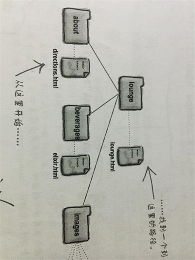

一些元素具有属性，利用属性，可以指定一个元素的附加信息，属性的写法都是一样的:首先
是属性名，后面是一个等号，然后是用双引号括起来的属性值。Web浏览器对每个元素都有一组预定义的属性，所以某
些属性只能用于特定的一些元素。
在所有元素中，属性的顺序都不重要，你可以用任何喜欢的顺序排列他们。
"超文本"是Web的基础，前面提到HTML的另一个方面就是它，有了它，浏览器就可以摆脱单个页面的束缚链接到其它页面，而这要
依靠a元素来完成，这是运用它的格式:
<a href="链接地址和链接文件名">标签</a>
其中，标签即页面中显示的链接名，href属性告诉浏览器链接的目标文件，链接地址可以采用相对地址也可以使用绝对地址。好了，
这样你就可以使用a元素创建一个超文本链接了。另外，如果将一个<img>元素放在<a>之间，那么这个图像也会变的可单
击。
当href属性值为#时意为不跳转
a元素的本质其实就是下载，当它链接到一个浏览器可预览的资源时就会显示它，当它链接到一个不可预览的资源时，浏览器就会下载它。
除此之外，它还可以实现发送邮件,像这样 :<a href="mailto:邮箱">点击发送邮件<>
随着创建的HTML页面的增多，为了方便使用，必须得将它们组织起来。如果将一个网站的网页、图片等等资源放在同一个文件夹 下，无疑是很难管理的，所以要学会将其分门别类的安置。与大多数的设计决策一样，你要选择一个足够灵活可以扩展的组织方 案，同时还要力求简单。最好，在组建网站的初期时细心思考如何组织网站文件可以更简单、方便、易于升级。
为了指向不同文件夹内的文件，需要从页面所在的文件夹出发上行或下行一、两个文件夹到达目标文件，这个过程就叫做相对路径。
下面是一个例子:

答案是“../lounge.html”,注意这里的“..”，它代表“上行一个”文件夹，所以上行两个文件夹就是“../..”。在路径里，要用
“/”分隔路径的各个部分。